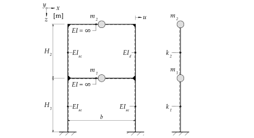
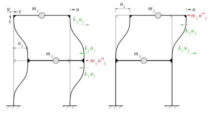
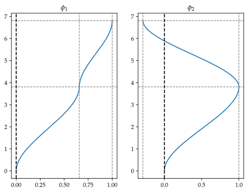
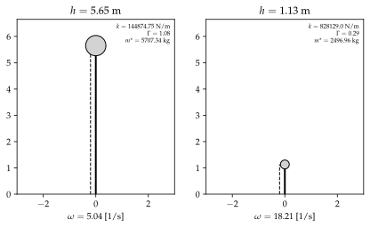
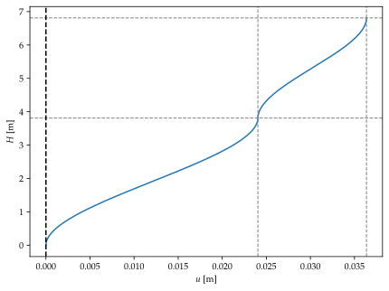
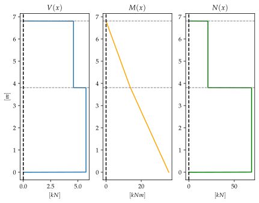

%run style_and_packages.ipynb16 Beispiel: Antwortspektrenverfahren an einem zweistöckigen Gebäude
export.pdf_to_svg('bilder/')16.1 Aufgabenstellung

Gesucht:
- Eigenfrequenzen \(\omega_n\)
- Darstellung der Eigenformen
- Modal- und Spektralmatrix
- Maximale Gesamtverformung mittels SRSS-Kombinationsregel aus dem Antwortspektrum der Pseudobeschleunigung.
- Resultierende Schnittgrössen
Gegeben:
- Baugrundklasse \(E\)
- Erdbebenzone \(Z2\)
params = {'EI_ac': 5.5*10**5 *unit.N*unit.m**2,
'EI_d': 2.5*10**5 *unit.N*unit.m**2,
'm_1':2100*unit.N*unit.second**2/unit.m,
'm_2':4800*unit.N*unit.second**2/unit.m,
'H_1':3.81*unit.m,
'H_2':3*unit.m,
}
params_plot = convert.param_value(params)
render.dict_to_table(params)| \(EI_{ac} = 550000.0 \text{m}^{2} \text{N}\) | \(EI_{d} = 250000.0 \text{m}^{2} \text{N}\) |
| \(H_{1} = 3.81 \text{m}\) | \(H_{2} = 3 \text{m}\) |
| \(m_{1} = \frac{2100 \text{N} \text{s}^{2}}{\text{m}}\) | \(m_{2} = \frac{4800 \text{N} \text{s}^{2}}{\text{m}}\) |
16.2 Musterlösung
16.2.1 Massenmatrix \(M\)

m_1, m_2 = sp.symbols('m_1, m_2')M = sp.Matrix([[m_1,0],[0,m_2]])
render.eq_display(sp.MatrixSymbol('M', 2, 2), M,
sp.MatrixSymbol('M', 2, 2), M.subs(params))\[\begin{equation}\mathbf{M} = \left[\begin{matrix}m_{1} & 0\\0 & m_{2}\end{matrix}\right]\end{equation}\]
\[\begin{equation}\mathbf{M} = \left[\begin{matrix}\frac{2100 \text{N} \text{s}^{2}}{\text{m}} & 0\\0 & \frac{4800 \text{N} \text{s}^{2}}{\text{m}}\end{matrix}\right]\end{equation}\]
16.2.2 Steifigkeitsmatrix \(K\)
16.2.2.1 Steifigkeit der Stockwerke
Die Steifigkeit des Systems in Abbildung 16.1 entspricht der Geschosssteifigkeit. Dazu sind die Steifigkeiten der Stützen zu addieren.
EI_ac, EI_d, H_1, H_2 = sp.symbols("EI_ac, EI_d, H_1, H_2")k_1 = 12 * EI_ac /H_1**3 * 2
k_2 = 12*EI_ac / H_2**3 + 12*EI_d / H_2**3
render.eq_display("k_1", k_1,
'k_1', k_1.subs(params).simplify().evalf(3),
"k_2", k_2,
'k_2', k_2.subs(params).simplify().evalf(3))\[\begin{equation}k_{1} = \frac{24 EI_{ac}}{H_{1}^{3}}\end{equation}\]
\[\begin{equation}k_{1} = \frac{2.39 \cdot 10^{5} \text{N}}{\text{m}}\end{equation}\]
\[\begin{equation}k_{2} = \frac{12 EI_{ac}}{H_{2}^{3}} + \frac{12 EI_{d}}{H_{2}^{3}}\end{equation}\]
\[\begin{equation}k_{2} = \frac{3.56 \cdot 10^{5} \text{N}}{\text{m}}\end{equation}\]
Abgefüllt in die Steifigkeitsmatrix
K = sp.Matrix([[k_1 + k_2, -k_2],[-k_2, k_2]])
render.eq_display(sp.MatrixSymbol('K', 2, 2), "Matrix([[k_1 + k_2, -k_2],[-k_2, k_2]])",
sp.MatrixSymbol('K', 2, 2), K,
sp.MatrixSymbol('K', 2, 2), K.subs(params).evalf(3))\[\begin{equation}\mathbf{K} = \left[\begin{matrix}k_{1} + k_{2} & - k_{2}\\- k_{2} & k_{2}\end{matrix}\right]\end{equation}\]
\[\begin{equation}\mathbf{K} = \left[\begin{matrix}\frac{12 EI_{ac}}{H_{2}^{3}} + \frac{24 EI_{ac}}{H_{1}^{3}} + \frac{12 EI_{d}}{H_{2}^{3}} & - \frac{12 EI_{ac}}{H_{2}^{3}} - \frac{12 EI_{d}}{H_{2}^{3}}\\- \frac{12 EI_{ac}}{H_{2}^{3}} - \frac{12 EI_{d}}{H_{2}^{3}} & \frac{12 EI_{ac}}{H_{2}^{3}} + \frac{12 EI_{d}}{H_{2}^{3}}\end{matrix}\right]\end{equation}\]
\[\begin{equation}\mathbf{K} = \left[\begin{matrix}\frac{5.94 \cdot 10^{5} \text{N}}{\text{m}} & - \frac{3.56 \cdot 10^{5} \text{N}}{\text{m}}\\- \frac{3.56 \cdot 10^{5} \text{N}}{\text{m}} & \frac{3.56 \cdot 10^{5} \text{N}}{\text{m}}\end{matrix}\right]\end{equation}\]
16.2.3 Eigenvektoren
16.2.3.1 Eigenkreisfrequenzen
Bei einem Mehrmassenschwinger gibt es entsprechend den Freiheitsgraden Eigenkreisfrequenzen \(\omega_n\). Diese lassen sich anhand folgender Gleichung bestimmen:
\[ \det{[\mathbf{K}-\omega_n^2 \mathbf{M}]=0} \tag{16.1}\]
omega_n =sp.symbols('omega_n')
eq_omega = sp.det(K-omega_n**2*M)
omega_n_solve = sp.solve(eq_omega, omega_n)
omega_1 = omega_n_solve[1]
omega_2 = omega_n_solve[3]
render.eq_display('omega_1', omega_1.subs(params).simplify().evalf(3),
'omega_2', omega_2.subs(params).simplify().evalf(3))\[\begin{equation}\omega_{1} = \frac{5.04}{\text{s}}\end{equation}\]
\[\begin{equation}\omega_{2} = \frac{18.2}{\text{s}}\end{equation}\]
16.2.3.2 Eigenvektoren \(\phi\)
Durch das Einsetzen der bestimmten Eigenkreisfrequenzen lassen sich die Eigenvektoren bestimmen. Die Einträge des Eigenvektors sind voneinander abhängig und lassen sich dem Entsprechen beliebig definieren. Grundsätzlich wird der maximale Eigenwert zu \(1\) gesetzt.
\[ \mathbf{K} - \omega_n^2 \mathbf{M} \phi_n= 0 \tag{16.2}\]
phi_11, phi_21 = sp.symbols('phi_11, phi_21')
params['phi_11'] = 1
phi_1 = sp.Matrix([[phi_11], [phi_21]])
phi_21 = list(sp.solve((K-omega_1**2 *M)*phi_1, phi_21).values())[0]
params['phi_21'] = phi_21.subs(params).simplify()
params['phi_11'] = 1/phi_21.subs(params).simplify()
params['phi_21'] = 1
render.eq_display(sp.MatrixSymbol('phi_1', 2,1),sp.simplify(phi_1.subs(params)).evalf(3))\[\begin{equation}\mathbf{\phi}_{1} = \left[\begin{matrix}0.657\\1.0\end{matrix}\right]\end{equation}\]
phi_12, phi_22 = sp.symbols('phi_12, phi_22')
params['phi_12'] = 1
phi_2 = sp.Matrix([[phi_12], [phi_22]])
phi_22 = list(sp.solve((K-omega_2**2 *M)*phi_2, phi_22).values())[0]
params['phi_22'] = phi_22.subs(params).simplify()
render.eq_display(sp.MatrixSymbol('phi_2', 2,1),sp.simplify(phi_2.subs(params)).evalf(3))\[\begin{equation}\mathbf{\phi}_{2} = \left[\begin{matrix}1.0\\-0.288\end{matrix}\right]\end{equation}\]
16.2.3.3 Darstellung der Eigenvektoren
Die Darstellung der Eigenvektoren besteht aus der Biegedeformation mit den Eigenvektoren entsprechenden Kopfauslenkungen. Für den Fall einer beidseitigen Einspannung und einer Verschiebung an den Knoten, entspricht die Deformation der Gleichung 16.3.
\[ w(x) = \Delta_A + (\Delta_B- \Delta_A)(3\xi^2 - 2 \xi^3) \tag{16.3}\]
mit \[ \xi = \frac{x}{l} \tag{16.4}\]
wobei \(x\) die Laufvariable ist und \(l\) die Stablänge, oder in diesem Fall die Stockwerkshöhe.
Für den ersten Eigenvektor
Delta_A, Delta_B, zeta = sp.symbols('Delta_A, Delta_B, zeta')
#Ansatzfunktion für Teil 1 der Funktion
zeta = x/l
w_ansatz = Delta_A + (Delta_B-Delta_A)*(3*zeta**2 - 2*zeta**3)
render.eq_display('w(x)', w_ansatz)
w_1_x = w_ansatz.subs(Delta_A, 0).subs(Delta_B, phi_11.subs(params)).subs(l,H_1.subs(params_plot))
#Ansatzfunktion für Teil 2 der Funktion
zeta = (x-H_1.subs(params_plot))/l
w_ansatz = Delta_A + (Delta_B-Delta_A)*(3*zeta**2 - 2*zeta**3)
render.eq_display('w(x)', w_ansatz.evalf(2))
w_2_x = w_ansatz.subs(Delta_A, phi_11.subs(params)).subs(Delta_B, phi_21.subs(params)).subs(l,H_2.subs(params_plot))
#Zusammengestellt
w_eigenform_1 = sp.Eq(w,sp.Piecewise((w_1_x, x<=H_1.subs(params_plot)),(w_2_x, x>=H_1.subs(params_plot))))
render.eq_display(w_eigenform_1.lhs, w_eigenform_1.rhs.evalf(2))\[\begin{equation}w{\left(x \right)} = \Delta_{A} + \left(- \Delta_{A} + \Delta_{B}\right) \left(\frac{3 x^{2}}{l^{2}} - \frac{2 x^{3}}{l^{3}}\right)\end{equation}\]
\[\begin{equation}w{\left(x \right)} = \Delta_{A} + \left(- \Delta_{A} + \Delta_{B}\right) \left(\frac{44.0 \left(0.26 x - 1.0\right)^{2}}{l^{2}} - \frac{1.1 \cdot 10^{2} \left(0.26 x - 1.0\right)^{3}}{l^{3}}\right)\end{equation}\]
\[\begin{equation}w = \begin{cases} - 0.024 x^{3} + 0.14 x^{2} & \text{for}\: x \leq 3.81 \\- 1.4 \left(0.26 x - 1.0\right)^{3} + 1.7 \left(0.26 x - 1.0\right)^{2} + 0.66 & \text{for}\: x \geq 3.81 \end{cases}\end{equation}\]
Für den zweiten Eigenvektor. (Es bedingt eine Verschiebung der Laufvariable \(x\) um die \(H_1\))
Delta_A, Delta_B, zeta = sp.symbols('Delta_A, Delta_B, zeta')
#Ansatzfunktion für Teil 1 der Funktion
zeta = x/l
w_ansatz = Delta_A + (Delta_B-Delta_A)*(3*zeta**2 - 2*zeta**3)
render.eq_display('w(x)', w_ansatz)
w_12_x = w_ansatz.subs(Delta_A, 0).subs(Delta_B, phi_12.subs(params)).subs(l,H_1.subs(params_plot))
#Ansatzfunktion für Teil 2 der Funktion
zeta = (x-H_1.subs(params_plot))/l
w_ansatz = Delta_A + (Delta_B-Delta_A)*(3*zeta**2 - 2*zeta**3)
render.eq_display('w(x)', w_ansatz.evalf(2))
w_22_x = w_ansatz.subs(Delta_A, phi_12.subs(params)).subs(Delta_B, phi_22.subs(params)).subs(l,H_2.subs(params_plot))
#Zusammengestellt
w_eigenform_2 = sp.Eq(w,sp.Piecewise((w_12_x, x<=H_1.subs(params_plot)),(w_22_x, x>=H_1.subs(params_plot))))
render.eq_display(w_eigenform_2.lhs, w_eigenform_2.rhs.evalf(2))\[\begin{equation}w{\left(x \right)} = \Delta_{A} + \left(- \Delta_{A} + \Delta_{B}\right) \left(\frac{3 x^{2}}{l^{2}} - \frac{2 x^{3}}{l^{3}}\right)\end{equation}\]
\[\begin{equation}w{\left(x \right)} = \Delta_{A} + \left(- \Delta_{A} + \Delta_{B}\right) \left(\frac{44.0 \left(0.26 x - 1.0\right)^{2}}{l^{2}} - \frac{1.1 \cdot 10^{2} \left(0.26 x - 1.0\right)^{3}}{l^{3}}\right)\end{equation}\]
\[\begin{equation}w = \begin{cases} - 0.036 x^{3} + 0.21 x^{2} & \text{for}\: x \leq 3.81 \\5.3 \left(0.26 x - 1.0\right)^{3} - 6.2 \left(0.26 x - 1.0\right)^{2} + 1.0 & \text{for}\: x \geq 3.81 \end{cases}\end{equation}\]
#Numerische Daten generieren
w_eigenform_1_lamb = sp.lambdify(x, w_eigenform_1.rhs)
w_eigenform_2_lamb = sp.lambdify(x, w_eigenform_2.rhs)
x_array = np.linspace(0, float((H_1+H_2).subs(params_plot)), 1000)
w_1_array = w_eigenform_1_lamb(x_array)
w_2_array = w_eigenform_2_lamb(x_array)
# Figure und Axes erstellen
fig, (ax1, ax2) = plt.subplots(1, 2)
# Ersten Plot erstellen
ax1.plot(w_1_array, x_array)
ax1.set_title('$\phi_1$')
## Horizontale Linien
ax1.axhline(H_1.subs(params_plot),linestyle='dashed', color='gray',linewidth=1)
ax1.axhline((H_1+H_2).subs(params_plot),linestyle='dashed', color='gray',linewidth=1)
ax1.axvline(phi_21.subs(params),linestyle='dashed', color='gray',linewidth=1)
ax1.axvline(phi_11.subs(params),linestyle='dashed', color='gray',linewidth=1)
ax1.axvline(0,linestyle='dashed', color='black')
# Zweiten Plot erstellen
ax2.plot(w_2_array, x_array)
ax2.set_title('$\phi_2$')
## Horizontale Linien
ax2.axhline(H_1.subs(params_plot),linestyle='dashed', color='gray',linewidth=1)
ax2.axhline((H_1+H_2).subs(params_plot),linestyle='dashed', color='gray',linewidth=1)
ax2.axvline(phi_22.subs(params),linestyle='dashed', color='gray',linewidth=1)
ax2.axvline(phi_12.subs(params),linestyle='dashed', color='gray',linewidth=1)
ax2.axvline(0,linestyle='dashed', color='black')
# Plots anzeigen
plt.show()

16.2.4 Modale Analyse
Die Modale Analyse zielt darauf ab, den Mehrmassenschwinger zu entkoppeln. Dazu wird in einem ersten Schritt die Orthogonalitätsbedingung kontrolliert. Diese muss erfüllt sein, um eine Entkoppelung durchzuführen. Siehe Kapitel 12.2.2.4 für eine ausführliche Erklärung.
16.2.4.1 Orthogonalitätsbedingung
Angewendet auf die Massenmatrix: Es zeigen sich kleine numerische Unreinheiten, welche vernachlässigt werden können.
render.eq_display(sp.MatrixSymbol('phi_1',2,1).T*sp.MatrixSymbol('M', 2,2)*sp.MatrixSymbol('phi_1',2,1),(phi_1.T*M*phi_1).subs(params).evalf(3),
sp.MatrixSymbol('phi_2',2,1).T*sp.MatrixSymbol('M', 2,2)*sp.MatrixSymbol('phi_2',2,1),(phi_2.T*M*phi_2).subs(params).evalf(3),
sp.MatrixSymbol('phi_2',2,1).T*sp.MatrixSymbol('M', 2,2)*sp.MatrixSymbol('phi_1',2,1),(phi_2.T*M*phi_1).subs(params).evalf(3),
sp.MatrixSymbol('phi_1',2,1).T*sp.MatrixSymbol('M', 2,2)*sp.MatrixSymbol('phi_2',2,1),(phi_1.T*M*phi_2).subs(params).evalf(3))\[\begin{equation}\mathbf{\phi}_{1}^{T} \mathbf{M} \mathbf{\phi}_{1} = \left[\begin{matrix}\frac{5.71 \cdot 10^{3} \text{N} \text{s}^{2}}{\text{m}}\end{matrix}\right]\end{equation}\]
\[\begin{equation}\mathbf{\phi}_{2}^{T} \mathbf{M} \mathbf{\phi}_{2} = \left[\begin{matrix}\frac{2.5 \cdot 10^{3} \text{N} \text{s}^{2}}{\text{m}}\end{matrix}\right]\end{equation}\]
\[\begin{equation}\mathbf{\phi}_{2}^{T} \mathbf{M} \mathbf{\phi}_{1} = \left[\begin{matrix}\frac{1.59 \cdot 10^{-12} \text{N} \text{s}^{2}}{\text{m}}\end{matrix}\right]\end{equation}\]
\[\begin{equation}\mathbf{\phi}_{1}^{T} \mathbf{M} \mathbf{\phi}_{2} = \left[\begin{matrix}\frac{1.59 \cdot 10^{-12} \text{N} \text{s}^{2}}{\text{m}}\end{matrix}\right]\end{equation}\]
Für die Steifigkeitsmatrix:
render.eq_display(sp.MatrixSymbol('phi_1',2,1).T*sp.MatrixSymbol('K', 2,2)*sp.MatrixSymbol('phi_1',2,1),sp.simplify((phi_1.T*K*phi_1).subs(params)).evalf(3),
sp.MatrixSymbol('phi_2',2,1).T*sp.MatrixSymbol('K', 2,2)*sp.MatrixSymbol('phi_2',2,1),sp.simplify((phi_2.T*K*phi_2).subs(params)).evalf(3),
sp.MatrixSymbol('phi_2',2,1).T*sp.MatrixSymbol('K', 2,2)*sp.MatrixSymbol('phi_1',2,1),sp.simplify((phi_2.T*K*phi_1).subs(params)).evalf(4),
sp.MatrixSymbol('phi_1',2,1).T*sp.MatrixSymbol('K', 2,2)*sp.MatrixSymbol('phi_2',2,1),sp.simplify((phi_1.T*K*phi_2).subs(params)).evalf(4))\[\begin{equation}\mathbf{\phi}_{1}^{T} \mathbf{K} \mathbf{\phi}_{1} = \left[\begin{matrix}\frac{1.45 \cdot 10^{5} \text{N}}{\text{m}}\end{matrix}\right]\end{equation}\]
\[\begin{equation}\mathbf{\phi}_{2}^{T} \mathbf{K} \mathbf{\phi}_{2} = \left[\begin{matrix}\frac{8.28 \cdot 10^{5} \text{N}}{\text{m}}\end{matrix}\right]\end{equation}\]
\[\begin{equation}\mathbf{\phi}_{2}^{T} \mathbf{K} \mathbf{\phi}_{1} = \left[\begin{matrix}\frac{9.459 \cdot 10^{-11} \text{N}}{\text{m}}\end{matrix}\right]\end{equation}\]
\[\begin{equation}\mathbf{\phi}_{1}^{T} \mathbf{K} \mathbf{\phi}_{2} = \left[\begin{matrix}\frac{9.459 \cdot 10^{-11} \text{N}}{\text{m}}\end{matrix}\right]\end{equation}\]
16.2.4.2 Modal- und Spektralmatrix
Mittels der Modal- und Spektralmatrix lassen sich die generalisierten Grössen effizient ermitteln.
Phi = sp.Matrix([[phi_1, phi_2]])
Omega = sp.Matrix([[omega_1, 0],[0, omega_2]])
render.eq_display('Modalmatrix', 'Phi',
sp.MatrixSymbol('Phi', 2, 2), Phi.subs(params).evalf(4),
'Spektralmatrix', 'Omega^2',
sp.MatrixSymbol('Omega^2', 2, 2), (Omega**2).subs(params).evalf(4))\[\begin{equation}Modalmatrix = \Phi\end{equation}\]
\[\begin{equation}\mathbf{\Phi} = \left[\begin{matrix}0.6573 & 1.0\\1.0 & -0.2876\end{matrix}\right]\end{equation}\]
\[\begin{equation}Spektralmatrix = \Omega^{2}\end{equation}\]
\[\begin{equation}\mathbf{\Omega}^{2} = \left[\begin{matrix}\frac{25.38}{\text{s}^{2}} & 0\\0 & \frac{331.7}{\text{s}^{2}}\end{matrix}\right]\end{equation}\]
16.2.4.3 Generalisierte Grössen
M_star = Phi.T * M * Phi
K_star = Phi.T * K * Phi
M_star_clean = set_small_values_to_zero(M_star.subs(params).evalf(5), 0.1*unit.N *unit.second**2 / unit.m)
K_star_clean = set_small_values_to_zero(K_star.subs(params).evalf(5), 0.1*unit.N / unit.m)
render.eq_display(sp.MatrixSymbol('M^\star', 2,2),sp.simplify(M_star_clean.subs(params)).evalf(5),
sp.MatrixSymbol('K^\star', 2,2),sp.simplify(K_star_clean.subs(params)).evalf(5))
\[\begin{equation}\mathbf{M}^{\star} = \left[\begin{matrix}\frac{5707.3 \text{N} \text{s}^{2}}{\text{m}} & 0\\0 & \frac{2497.0 \text{N} \text{s}^{2}}{\text{m}}\end{matrix}\right]\end{equation}\]
\[\begin{equation}\mathbf{K}^{\star} = \left[\begin{matrix}\frac{1.4487 \cdot 10^{5} \text{N}}{\text{m}} & 0\\0 & \frac{8.2813 \cdot 10^{5} \text{N}}{\text{m}}\end{matrix}\right]\end{equation}\]
16.2.4.4 Modale Höhen
Die modalen Höhen bestimmen sich aus Gleichung 16.5:
\[ H_n = \frac{L_n^\theta}{L_n} \tag{16.5}\]
\[ L_n = \phi_n^T \cdot \mathbf{M 1} \tag{16.6}\]
\[ L_n^\theta = \sum_{j=1}^N H_j \cdot m_j \cdot \phi_{jn} \tag{16.7}\]
Angewendet auf das Beispiel folgt:
one_vec = sp.ones(2,1)
H_matrix = sp.Matrix([H_1, H_2])
H_modal = (H_matrix.T*M*Phi).T.multiply_elementwise((M*Phi.T*one_vec).applyfunc(lambda x: x**-1))
render.eq_display(
sp.MatrixSymbol('H', 2,1), H_matrix,
sp.MatrixSymbol('H', 2,1), H_modal,
sp.MatrixSymbol('H', 2,1), H_modal.subs(params).evalf(3),
)\[\begin{equation}\mathbf{H} = \left[\begin{matrix}H_{1}\\H_{2}\end{matrix}\right]\end{equation}\]
\[\begin{equation}\mathbf{H} = \left[\begin{matrix}\frac{H_{1} m_{1} \phi_{11} + H_{2} m_{2} \phi_{21}}{m_{1} \phi_{11} + m_{1} \phi_{21}}\\\frac{H_{1} m_{1} \phi_{12} + H_{2} m_{2} \phi_{22}}{m_{2} \phi_{12} + m_{2} \phi_{22}}\end{matrix}\right]\end{equation}\]
\[\begin{equation}\mathbf{H} = \left[\begin{matrix}5.65 \text{m}\\1.13 \text{m}\end{matrix}\right]\end{equation}\]
16.2.4.5 Kontrolle der modalen Transformation
Die Eigenkreisfrequenzen ändern sich durch die Transformation nicht.
omega_1_kontrolle = sp.sqrt(K_star[0] / M_star[0])
omega_2_kontrolle = sp.sqrt(K_star[3] / M_star[3])
render.eq_display('omega_1', omega_1.subs(params).simplify().evalf(3),
'omega_1_modal', omega_1_kontrolle.subs(params).simplify().evalf(3),
'omega_2', omega_2.subs(params).simplify().evalf(4),
'omega_2_modal', omega_2_kontrolle.subs(params).simplify().evalf(4))
\[\begin{equation}\omega_{1} = \frac{5.04}{\text{s}}\end{equation}\]
\[\begin{equation}\omega_{1 modal} = \frac{5.04}{\text{s}}\end{equation}\]
\[\begin{equation}\omega_{2} = \frac{18.21}{\text{s}}\end{equation}\]
\[\begin{equation}\omega_{2 modal} = \frac{18.21}{\text{s}}\end{equation}\]
16.2.4.6 Partizipationsfaktor \(\Gamma\)
Die Verteilung des Partizipationsfaktor gibt einen direkten Hinweis, welcher Eigenmode an der Gesamtanwort den grössten Einfluss (beteiligt bzw. partizipiert) hat.
\[ \Gamma_n = \frac{\Phi_n^T \mathbf{M 1}}{\Phi_n^T \mathbf{M}\Phi_n} \tag{16.8}\]
In allgemeiner Form lautet der Partizipationsfaktor:
\[ \Gamma_n = \frac{\Phi_n^T \mathbf{M r^\star}}{\Phi_n^T \mathbf{M}\Phi_n} \tag{16.9}\]
\(\mathbf{r^\star}\) beschreibt die Starrkörperverschiebung infolge der Erdbebenanregung \(u_g\) am Fusspunkt des Gesamtsystems.
\[ \mathbf{r^\star} = \begin{bmatrix} FHG_1 \\ FHG_2 \end{bmatrix}= \begin{bmatrix} \cos(0) \\ \cos(0) \end{bmatrix}= \begin{bmatrix} 1 \\ 1 \end{bmatrix}= \mathbf{1} \tag{16.10}\]
Die Partizipationsmatrix lässt sich direkt durch folgende Gleichung ermitteln:
\[ \Gamma = M^{\star-1} \cdot \Phi^T \cdot M \cdot 1 \tag{16.11}\]
Gelöst mit Gleichung 16.11:
one_vec = sp.ones(2,1)
Gamma = M_star**-1 * Phi.T * M*one_vec
render.eq_display(
sp.MatrixSymbol('Gamma',2,1), Gamma.subs(params).evalf(3))\[\begin{equation}\mathbf{\Gamma} = \left[\begin{matrix}1.08\\0.288\end{matrix}\right]\end{equation}\]
Gelöst mit Gleichung 16.9:
gamma_1 = (phi_1.T*M*one_vec)[0]/(phi_1.T*M*phi_1)[0]
gamma_2 = (phi_2.T*M*one_vec)[0]/(phi_2.T*M*phi_2)[0]
gamma_sqr = sp.Matrix([[gamma_1**2],[gamma_2**2]])
render.eq_display('Gamma_1', gamma_1,
'Gamma_1', gamma_1.subs(params).evalf(3),
'Gamma_2', gamma_2,
'Gamma_2', gamma_2.subs(params).evalf(3),
sp.MatrixSymbol('Gamma^2_n',2,1),gamma_sqr.subs(params).evalf(3))\[\begin{equation}\Gamma_{1} = \frac{m_{1} \phi_{11} + m_{2} \phi_{21}}{m_{1} \phi_{11}^{2} + m_{2} \phi_{21}^{2}}\end{equation}\]
\[\begin{equation}\Gamma_{1} = 1.08\end{equation}\]
\[\begin{equation}\Gamma_{2} = \frac{m_{1} \phi_{12} + m_{2} \phi_{22}}{m_{1} \phi_{12}^{2} + m_{2} \phi_{22}^{2}}\end{equation}\]
\[\begin{equation}\Gamma_{2} = 0.288\end{equation}\]
\[\begin{equation}\mathbf{\Gamma}^{2}_{n} = \left[\begin{matrix}1.17\\0.0831\end{matrix}\right]\end{equation}\]
hoehe = list(H_modal.subs(params).evalf(3)/unit.m)
hoehe = [np.float64(i).round(2) for i in hoehe]
masse = list(M_star_clean/unit.N/unit.second**2 * unit.m)
masse = [np.float64(i).round(2) for i in masse if i != 0]
steifigkeiten = list(K_star_clean/unit.N * unit.m)
steifigkeiten = [np.float64(i).round(2) for i in steifigkeiten if i != 0]
omegas = list(Omega.subs(params)*unit.second)
omegas = [np.float64(i).round(2) for i in omegas if i != 0]
gammas = list(Gamma.subs(params).evalf(3))
gammas = [np.float64(i).round(2) for i in gammas if i != 0]
plot_einmassenschwinger(hoehe, masse, steifigkeiten, omegas, gammas)
16.2.5 Elastisches Antwortspektrum
Aus der Aufgabenstellung darf nach (Schweizerischer Ingenieur- und Architektenverein (SIA), 2020) Abs. 16.2.3.1 Kurve \(E\) gewählt werden.
a_gd = 1 *unit.m /unit.second**216.2.5.1 Grundschwingzeit
Die Grundschwingzeit kann anhand der bereits ermittelten Eigenkreisfrequenzen ermittelt werden.
T_1 = (omega_1 /(2*sp.pi))**-1
T_2 = (omega_2 /(2*sp.pi))**-1
render.eq_display('T_1', T_1.subs(params).evalf(3),
'T_2', T_2.subs(params).evalf(3),
)\[\begin{equation}T_{1} = 1.25 \text{s}\end{equation}\]
\[\begin{equation}T_{2} = 0.345 \text{s}\end{equation}\]
16.2.5.2 Elastisches Antwortspektrum
S_e_1 = antwortspektrum(a_gd, T_1.subs(params).evalf(3), Baugrundklasse='E')
render.eq_display('S_e_1', S_e_1.evalf(3))| \(S = 1.7\) | \(T_{B} = 0.09 \text{s}\) |
| \(T_{C} = 0.25 \text{s}\) | \(T_{D} = 2.0 \text{s}\) |
| \(\eta = 1\) |
\[\begin{equation}S_{e} = \frac{2.5 S_{} T_{C} a_{gd} \eta}{T}\end{equation}\]
\[\begin{equation}S_{e 1} = \frac{0.852 \text{m}}{\text{s}^{2}}\end{equation}\]
S_e_2 = antwortspektrum(a_gd, T_2.subs(params).evalf(3), Baugrundklasse = 'E')
render.eq_display('S_e_2', S_e_2.evalf(3))| \(S = 1.7\) | \(T_{B} = 0.09 \text{s}\) |
| \(T_{C} = 0.25 \text{s}\) | \(T_{D} = 2.0 \text{s}\) |
| \(\eta = 1\) |
\[\begin{equation}S_{e} = \frac{2.5 S_{} T_{C} a_{gd} \eta}{T}\end{equation}\]
\[\begin{equation}S_{e 2} = \frac{3.08 \text{m}}{\text{s}^{2}}\end{equation}\]
16.2.6 Maximale Deformation
Die maximale Deformation resultiert aus der Beschleunigung \(S_e\) und der Eigenkreisfrequenz \(\omega_n^2\). Für die Modalen EMS gilt es diese anhand der Partizipationsfaktoren zu gewichten. Zur effektiven Bestimmung der Auslenkung sind die Resultate der EMS mittels SRSS-Regel zu überlagern.
q_1_max = Gamma[0] * S_e_1 / omega_1**2
q_2_max = Gamma[1] * S_e_2 / omega_2**2
render.eq_display('q_1_max',"Gamma_1 * S_e_1 / omega_1**2",
'q_1_max', q_1_max.subs(params).evalf(3),
'q_2_max',"Gamma_2 * S_e_2 / omega_2**2",
'q_2_max', q_2_max.subs(params).evalf(3))\[\begin{equation}q_{1 max} = \frac{\Gamma_{1} S_{e 1}}{\omega_{1}^{2}}\end{equation}\]
\[\begin{equation}q_{1 max} = 0.0364 \text{m}\end{equation}\]
\[\begin{equation}q_{2 max} = \frac{\Gamma_{2} S_{e 2}}{\omega_{2}^{2}}\end{equation}\]
\[\begin{equation}q_{2 max} = 0.00268 \text{m}\end{equation}\]
Um die Entkoppelung rückzuführen, gilt es die erhaltenen Resultate zu überlagern. Dabei gibt es unterschiedliche Ansätze. Bei weit auseinander liegenden Eigenfrequenzen kann die SRSS-Überlagerung verwendet werden.
\[ u_{max} = \sqrt{\sum_{n=1}^2 (q_{n} \cdot \phi_n)^2} \tag{16.12}\]
u_max = ((phi_1*q_1_max).applyfunc(lambda x: x**2)+(phi_2*q_2_max).applyfunc(lambda x: x**2)).applyfunc(sp.sqrt)
render.eq_display(sp.MatrixSymbol('u_max', 2,1), u_max.subs(params).evalf(3))\[\begin{equation}\mathbf{u}_{max} = \left[\begin{matrix}0.024 \text{m}\\0.0364 \text{m}\end{matrix}\right]\end{equation}\]
Delta_A, Delta_B, zeta = sp.symbols('Delta_A, Delta_B, zeta')
#Ansatzfunktion für Teil 1 der Funktion
zeta = x/l
w_ansatz = Delta_A + (Delta_B-Delta_A)*(3*zeta**2 - 2*zeta**3)
w_1_x = w_ansatz.subs(Delta_A, 0).subs(Delta_B, u_max[0].subs(params)/unit.m).subs(l,H_1.subs(params_plot))
#Ansatzfunktion für Teil 2 der Funktion
zeta = (x-H_1.subs(params_plot))/l
w_ansatz = Delta_A + (Delta_B-Delta_A)*(3*zeta**2 - 2*zeta**3)
w_2_x = w_ansatz.subs(Delta_A, u_max[0].subs(params)/unit.m).subs(Delta_B, u_max[1].subs(params)/unit.m).subs(l,H_2.subs(params_plot))
#Zusammengestellt
w_eigenform_1 = sp.Eq(w,sp.Piecewise((w_1_x, x<=H_1.subs(params_plot)),(w_2_x, x>=H_1.subs(params_plot))))#Numerische Daten generieren
w_eigenform_1_lamb = sp.lambdify(x, w_eigenform_1.rhs)
x_array = np.linspace(0, float((H_1+H_2).subs(params_plot)), 1000)
w_1_array = w_eigenform_1_lamb(x_array)
# Ersten Plot erstellen
plt.plot(w_1_array, x_array)
## Horizontale Linien
plt.axhline(H_1.subs(params_plot),linestyle='dashed', color='gray',linewidth=1)
plt.axhline((H_1+H_2).subs(params_plot),linestyle='dashed', color='gray',linewidth=1)
plt.axvline(u_max[1].subs(params)/unit.m,linestyle='dashed', color='gray',linewidth=1)
plt.axvline(u_max[0].subs(params)/unit.m,linestyle='dashed', color='gray',linewidth=1)
plt.axvline(0,linestyle='dashed', color='black')
plt.xlabel('$u$ [m]')
plt.ylabel('$H$ [m]')
# Plots anzeigen
plt.show()

16.2.7 Maximale Schnittkräfte
16.2.7.1 Querkräfte
Die Einwirkungen resultieren aus der Masse multipliziert mit der Beschleunigung aus dem Antwortspektrum. Dazu sind in einem ersten Schritt die beiden entkoppelten EMS voneinander getrennt zu betrachten. Die Überlagerung erfolgt erst bei den ermittelten Querkräften.
\[ m_1 = \Gamma \cdot M \cdot \phi_1 \tag{16.13}\]
\[ F_{1max} = m_1 \cdot S_{e1} \tag{16.14}\]
Aus dem ersten EMS folgt:
M_1 = Gamma[0] * M * phi_1
F_1_max = M_1* S_e_1
V_1 = sp.Matrix([[F_1_max[0]+F_1_max[1]],[F_1_max[1]]])
render.eq_display(sp.MatrixSymbol('M_1', 2,1), M_1.subs(params).evalf(5),
sp.MatrixSymbol('F_1_max', 2,1), F_1_max.subs(params).evalf(5),
sp.MatrixSymbol('V_1', 2,1), V_1.subs(params).evalf(5))\[\begin{equation}\mathbf{M}_{1} = \left[\begin{matrix}\frac{1494.8 \text{N} \text{s}^{2}}{\text{m}}\\\frac{5197.8 \text{N} \text{s}^{2}}{\text{m}}\end{matrix}\right]\end{equation}\]
\[\begin{equation}\mathbf{F}_{1 max} = \left[\begin{matrix}1273.7 \text{N}\\4429.2 \text{N}\end{matrix}\right]\end{equation}\]
\[\begin{equation}\mathbf{V}_{1} = \left[\begin{matrix}5702.9 \text{N}\\4429.2 \text{N}\end{matrix}\right]\end{equation}\]
Aus dem zweiten EMS folglich:
M_2 = Gamma[1] * M * phi_2
F_2_max = M_2* S_e_2
V_2 = sp.Matrix([[F_2_max[0]+F_2_max[1]],[F_2_max[1]]])
render.eq_display(sp.MatrixSymbol('M_2', 2,1), M_2.subs(params).evalf(5),
sp.MatrixSymbol('F_2_max', 2,1), F_2_max.subs(params).evalf(5),
sp.MatrixSymbol('V_2', 2,1), V_2.subs(params).evalf(5))\[\begin{equation}\mathbf{M}_{2} = \left[\begin{matrix}\frac{605.23 \text{N} \text{s}^{2}}{\text{m}}\\- \frac{397.83 \text{N} \text{s}^{2}}{\text{m}}\end{matrix}\right]\end{equation}\]
\[\begin{equation}\mathbf{F}_{2 max} = \left[\begin{matrix}1864.2 \text{N}\\- 1225.4 \text{N}\end{matrix}\right]\end{equation}\]
\[\begin{equation}\mathbf{V}_{2} = \left[\begin{matrix}638.82 \text{N}\\- 1225.4 \text{N}\end{matrix}\right]\end{equation}\]
Maximale Querkraft aus Überlagerung beider EMS mittels SRSS-Regel.
\[ V_{max} = \sqrt{V_1^2 + V_2^2 } \tag{16.15}\]
V_max = (V_1.applyfunc(lambda x: x**2)+V_2.applyfunc(lambda x: x**2)).applyfunc(sp.sqrt)
render.eq_display(sp.MatrixSymbol('V_max', 2,1), V_max.subs(params).evalf(3))\[\begin{equation}\mathbf{V}_{max} = \left[\begin{matrix}5.74 \cdot 10^{3} \text{N}\\4.6 \cdot 10^{3} \text{N}\end{matrix}\right]\end{equation}\]
16.2.7.2 Biegemomente
Die Biegemomente lassen sich abschliessend anhand der Querkräfte bestimmen.
16.2.7.3 Normalkräfte
Die Normalkräfte resultieren aus den Punktmassen.
# Querkraft
V_x = sp.Piecewise((V_max[0].subs(params)/unit.N, ((x>0)&(x<=H_1.subs(params_plot)))), (V_max[1].subs(params)/unit.N, ((x>=H_1.subs(params_plot))&(x<=(H_1+H_2).subs(params_plot)))), (0,True))
# Biegemoment
C_1 = sp.symbols('C_1')
M_x = sp.integrate(-V_x, x) + C_1
C_1_solve = sp.solve(M_x.subs(x, (H_1+H_2).subs(params_plot)), C_1)[0]
M_x = M_x.subs(C_1, C_1_solve)
# Normalkraft
g = 10*unit.m/unit.second**2
N_x = sp.Piecewise(((m_1+m_2).subs(params)*g/unit.N, ((x>0)&(x<=H_1.subs(params_plot)))),(m_1.subs(params)*g/unit.N, ((x>=H_1.subs(params_plot))&(x<=(H_1+H_2).subs(params_plot)))), (0,True))
# Numerische Daten generieren
V_x_lamb = sp.lambdify(x, V_x)
V_x_array = V_x_lamb(x_array)
M_x_lamb = sp.lambdify(x,M_x)
M_x_array = M_x_lamb(x_array)
N_x_lamb = sp.lambdify(x,N_x)
N_x_array = N_x_lamb(x_array)
# Figure und Axes erstellen
fig, (ax1, ax2, ax3) = plt.subplots(1, 3)
# Ersten Plot erstellen
ax1.plot(V_x_array/1000, x_array)
ax1.set_title('$V(x)$')
## Horizontale Linien
ax1.axhline(H_1.subs(params_plot),linestyle='dashed', color='gray',linewidth=1)
ax1.axhline((H_1+H_2).subs(params_plot),linestyle='dashed', color='gray',linewidth=1)
ax1.set_xlabel('$[kN]$')
ax1.set_ylabel('$[m]$')
ax1.axvline(0,linestyle='dashed', color='black')
# Zweiten Plot erstellen
ax2.plot(M_x_array/1000, x_array, color='orange')
ax2.set_title('$M(x)$')
## Horizontale Linien
ax2.axhline(H_1.subs(params_plot),linestyle='dashed', color='gray',linewidth=1)
ax2.axhline((H_1+H_2).subs(params_plot),linestyle='dashed', color='gray',linewidth=1)
ax2.set_xlabel('$[kNm]$')
ax2.axvline(0,linestyle='dashed', color='black')
# Dritten Plot erstellen
ax3.plot(N_x_array/1000, x_array, color='green')
ax3.set_title('$N(x)$')
ax3.set_xlabel('$[kN]$')
## Horizontale Linien
ax3.axhline(H_1.subs(params_plot),linestyle='dashed', color='gray',linewidth=1)
ax3.axhline((H_1+H_2).subs(params_plot),linestyle='dashed', color='gray',linewidth=1)
ax3.axvline(0,linestyle='dashed', color='black')
# Plots anzeigen
plt.show()
